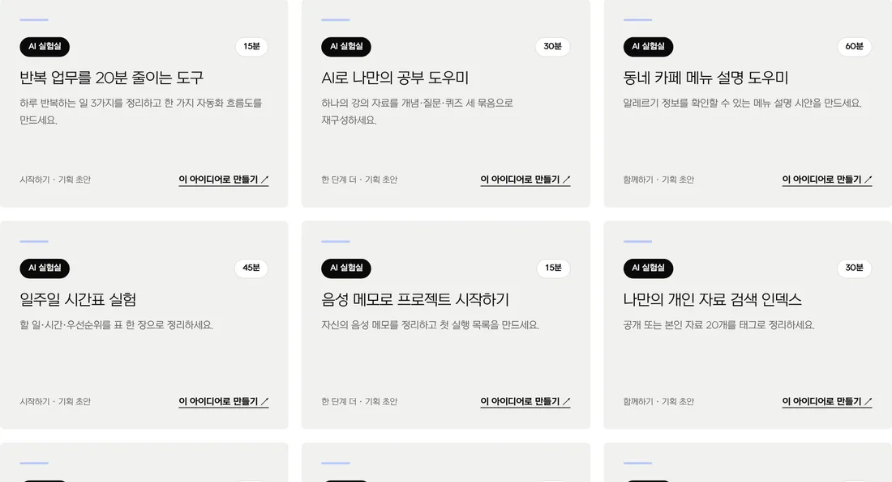
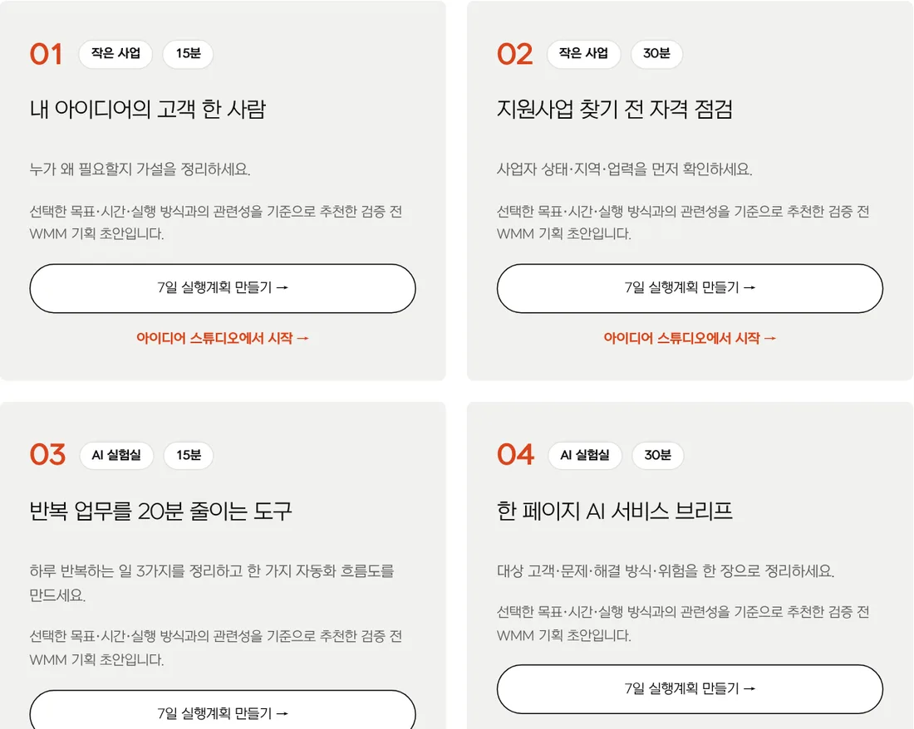

반복 업무를 20분 줄이는 도구
하루 반복하는 일 3가지를 정리하고 한 가지 자동화 흐름도를 만드세요.
시작하기 · 기획 초안이 아이디어로 만들기 ↗
누군가의 아이디어가 하나의 작품이 되고, 작은 도전이 기회가 되는 곳. 만들고, 실험하고, 사람과 연결되는 글로벌 크리에이티브 놀이터.
가입 없이 · 무료 · 내 브라우저에 저장No sign-up · Free · Saved in your browser
20초 사용법 · 찾기 → 만들기 → 실행 → 검증 (실제 화면)20-second guide · Find → Make → Act → Validate (actual screens)
AI·디자인·영상·코딩·재난 준비·공익까지. 바로 해 볼 수 있는 기획 초안을 분야와 시간으로 골라 보세요.From AI, design and video to coding, preparedness and impact. Filter ready-to-try drafts by field and time.

추천 이유와 7일 실행계획까지 이어집니다. 서버로 전송하지 않고 브라우저 안에서 계산합니다.Each comes with a reason and a 7-day plan, calculated in your browser without sending data.

문제·대상·결과물·검증할 가정·다음 행동 세 가지를 정리하고 파일로 내려받습니다.Lay out the problem, audience, deliverable, assumptions and three next actions, then download it.

하루 하나씩 체크하면 진행률이 저장됩니다. 다시 열어도 이어서 할 수 있습니다.Tick one a day and your progress is saved, so you can pick up where you left off.

아이디어는 많은데 무엇부터 시작해야 할지 모르겠어요.I have plenty of ideas but no idea where to start.
생각을 남에게 보여 줄 수 있는 한 장으로 정리하고 싶어요.I want one page I can show others.
작게라도 진짜 반응을 확인해 보고 싶어요.I want to test real reactions, even at a small scale.
함께할 사람과 역할과 권리를 먼저 정하고 싶어요.I want to agree roles and rights first with collaborators.
WMM PLAYGROUND는 이 네 가지를 순서대로 해결합니다.WMM PLAYGROUND answers these four, in order.
솔루션 찾기 · 3분Solution finder · 3 min
STEP 2아이디어 스튜디오 · 10분Idea studio · 10 min
STEP 37일 챌린지 · 하루 15분7-day challenge · 15 min a day
STEP 4LAUNCH 14 · 고객 반응 기록LAUNCH 14 · log real reactions

12개 분야마다 10개의 WMM 자체 아이디어. 외부 서비스·경품·지원사업 공고가 아니라 직접 수행해 볼 수 있는 기획 템플릿입니다.
하루 반복하는 일 3가지를 정리하고 한 가지 자동화 흐름도를 만드세요.
첫 장면·핵심 가치·행동 유도를 담은 스토리보드를 만드세요.
자막 길이·대비·체류시간 기준을 만드세요.
출처가 확실한 변환 규칙을 사용하세요.
실내 연료발전기 사용 금지와 인증을 먼저 확인하세요.
공식 요청 목록과 실제 수요를 비교하세요.
문제를 한 줄로 적으면 실행 목적, 대상, 산출물, 다음 세 가지 행동을 정리해 드립니다. 유료 AI 호출 없이 브라우저에서 동작합니다.
무료 아이디어 스튜디오 열기 ↗창작은 일상에서 시작하지만 비즈니스, 글로벌 협력, 안전한 사회에까지 연결될 수 있습니다.
역할, 일정, 수익배분, 사용권부터 확인하는 제안서 만들기. 현재 실제 매칭·계약은 운영하지 않습니다.
협업 준비하기 ↗전 세계 정부사업·재난·위험 정보를 공식 출처 중심으로 탐색하고 아이디어의 시장성을 검토하세요.
GOV RADAR 방문 ↗지역사회·환경·교육·접근성 문제를 해결하는 아이디어를 구체적인 실행계획으로 정리하세요.
공익 콘텐츠 탐색 ↗